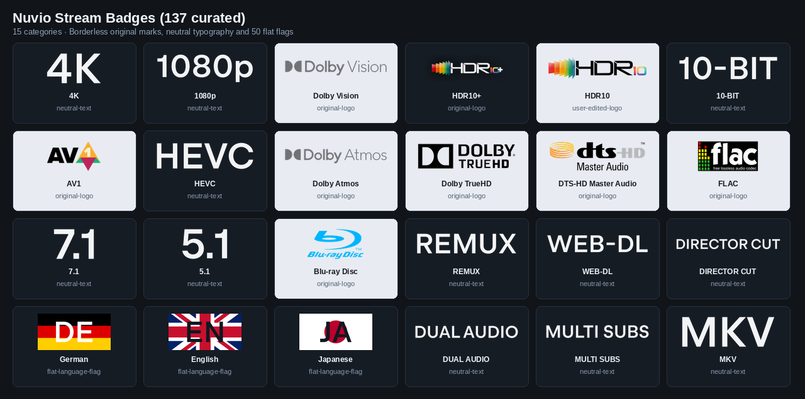

137 badges.
Original marks. Clear typography.
Curated technical stream badge set across 15 categories: resolutions, dynamic range, video & audio formats, channels, sources, editions, languages, subtitles and containers.
Original brand graphics retain their identity. Other metadata uses one neutral typeface with no added frames, shadows or material effects. HDR10 uses the user-approved edit of the supplied HDR10+ artwork; it is identified as a derivative.
50 language badges use flat flag fields with exactly centered neutral lettering and no added frame. Review flag backgrounds
Complete contact sheets by category
Overview and consistency proof
Open full overview · Text consistency preview · Current typeface preview



Sources, completeness and limitations
SVG marks are rendered from their original contours. Raster originals are resized faithfully; their original dimensions remain recorded and are not presented as newly created 4K detail. Preview backgrounds are not baked into the transparent exports. The 16 px mode is a layout preview based on the inspected Nuvio badge slot, not a device playback test.
The curated catalog focuses on practical media metadata used by Nuvio stream cards and player overlays, omitting streaming service logos, debrid/usenet providers, transport labels and unflagged minor language codes. Matching rules live in manifest.json.
Catalog · Verification · Source coverage · Brand provenance · Documentation · Design approval